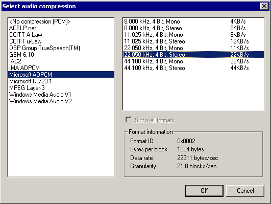

VirtualDub help - Dialogs: Audio compression | |||||||||
| On a crash... Dialogs: Video filtersVideo frame rate control Video color depth Video range Video compression Audio filters Audio interleaving Audio compression Audio conversion Audio volume Capture settings Capture preferences Capture volume meter Preferences |  VirtualDub can use audio codecs installed in Windows to compress video.
| ||||||||